從假村莊到真神廟兩年後 與 兩千兩百年前
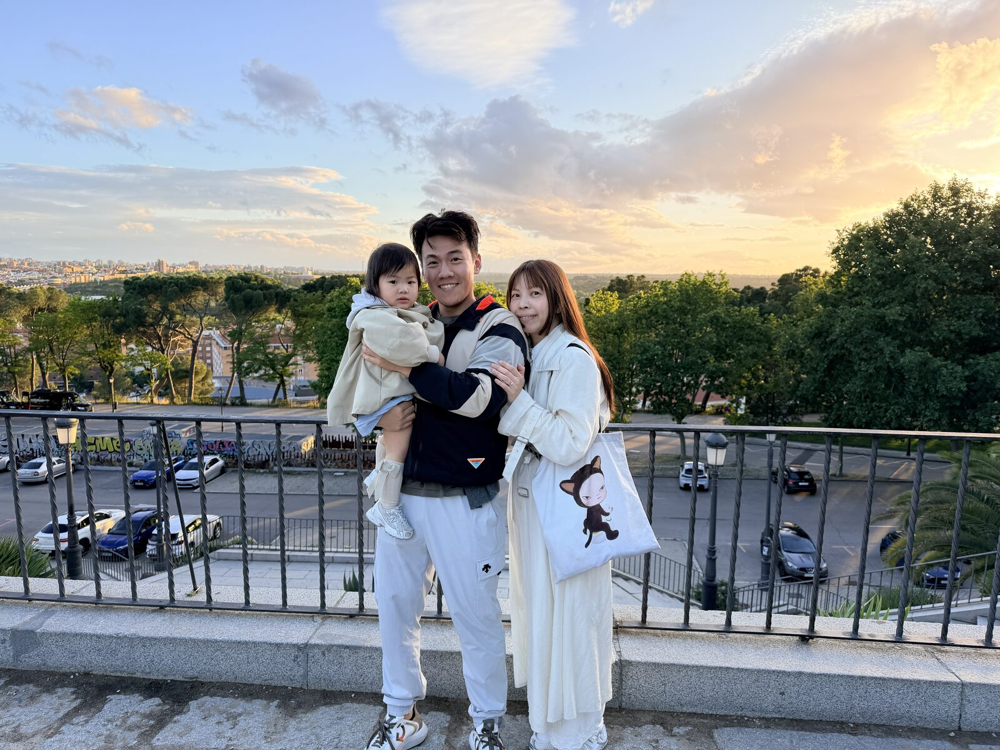
Day 5 我們被雨追,Day 6 我們**站著躲雨**,Day 7 —— 雨從早上一路追到中午,然後突然就放過我們了。
早上搭客運出城,在 Las Rozas Village 那座**假西班牙小鎮**買了兩年後才能穿的 Ralph Lauren;傍晚回市區,小跑步去看一座**兩千兩百年前的古埃及神廟**。
1 歲 11 個月 vs 2,200 年。**時間的尺度被馬德里壓扁成同一個下午。**
Las Rozas Village
搭客運出城 · 小紅書真的可以用
從 Plaza de España 上搭 **Avanza 625 路客運**,半小時就到馬德里西北郊的 **Las Rozas Village** —— 西班牙第一家、也是規模最大的精品 outlet,1996 年開幕,屬於英國 **The Bicester Collection** 旗下,跟巴塞隆納 La Roca、巴黎 La Vallée 同一個體系。
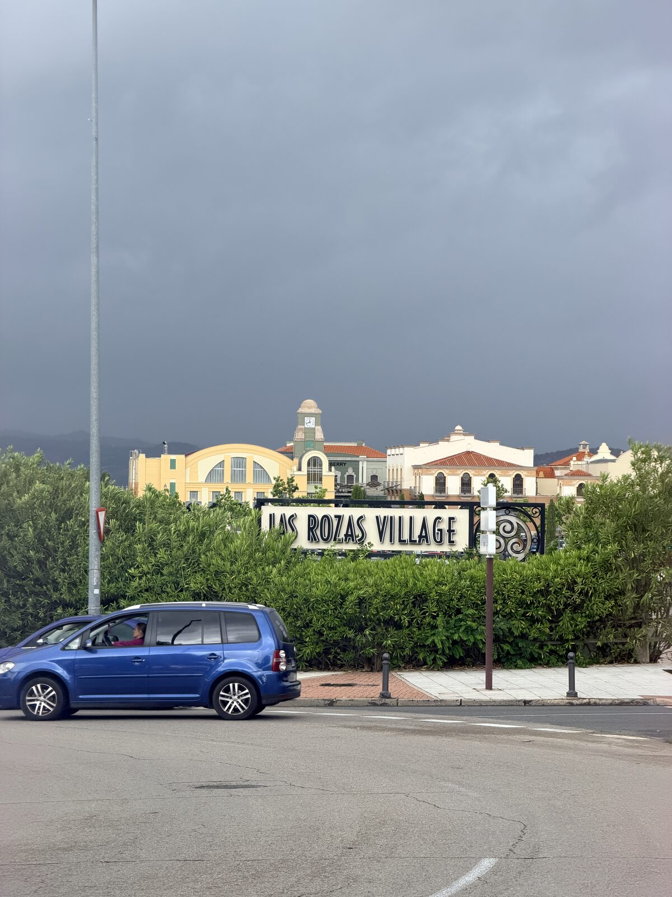
下車時天空灰得徹底 —— **馬德里連續第三天的雨快來了**。遠方山脊一片霧,前景灌木叢綠到發光,outlet 那排淺黃淺綠的「西班牙小鎮假村莊」反而被陰天襯得更鮮豔。
小紅書情報是真的能用 ——
說搭客運比火車轉乘划算,還真的是這樣。
票價現金支付,單程 4,20 €。
Mentidero Sal y Brasas
沒有歷史的三明治 · 葡萄牙式雞肉美乃滋
Outlet **沒有 food court**,這是 Chic Outlet 系列的設定 —— 它們不想被做成 mall,要做成「歐洲小鎮」氛圍,所以餐廳全部散在小鎮街道上。對親子來說有點不方便,但這就是它的脾氣。
下大雨,直接閃進 **Mentidero Sal y Brasas**(鹽與炭火)。深綠色拱形雨遮 + 兩側 Keith Haring 風的食物塗鴉壁畫 + 中間藍色馬賽克牆,門口擺著綠色高腳椅。整家店在雨裡很美。
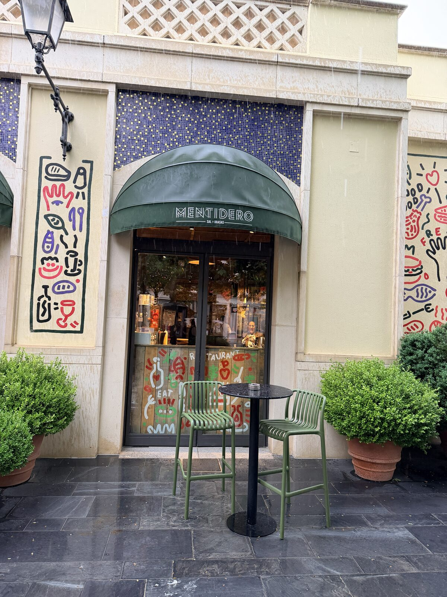
店名的西班牙幽默
*Mentidero* 在西班牙文是「**八卦聚集地 / 街角閒嗑牙的地方**」—— 字根 *mentir*(撒謊)+ -dero(處所)。馬德里有條老街就叫 *Mentidero de las Musas*(繆思八卦街),17 世紀的文人聚集處。這家店名翻成中文大概是:**「閒嗑牙·鹽與炭火」**。
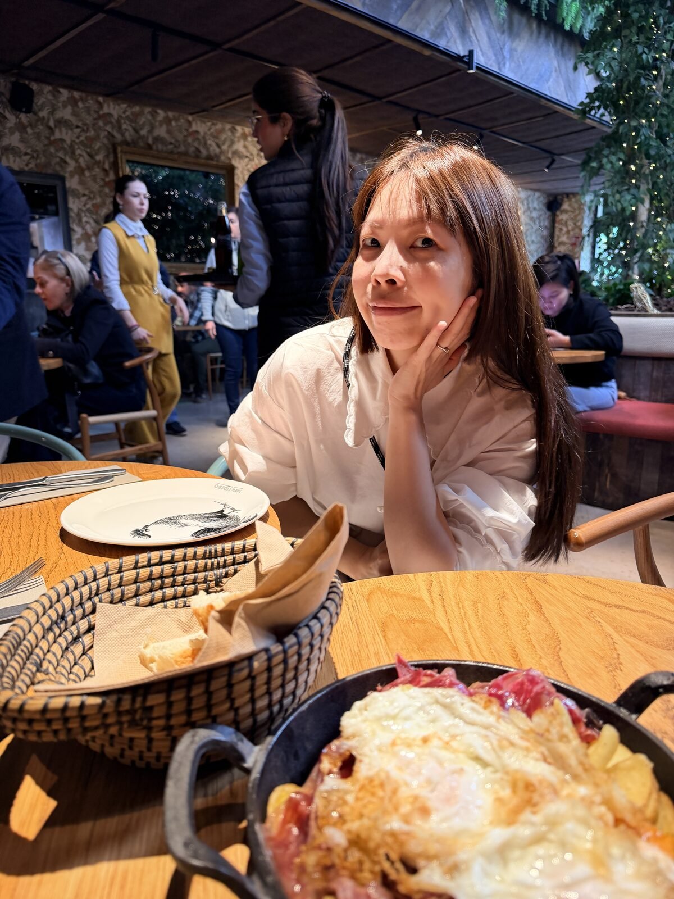
三餐裡的蕁麻疹閃避賽
阿米點了 **Huevos Fritos de Corral**(放山雞炸蛋) —— 三顆橘黃色蛋黃,蛋白邊緣焦脆,**下面是手切粗薯塊,旁邊鋪一片伊比利火腿**。一般 Huevos Rotos 大概 8-10 €,這家用放山雞蛋升級成 12,50 €。
我這邊點 **Mollete Portugués**(葡萄牙式扁麵包) —— 翻開來其實是**雞肉+調味美乃滋三明治**。10,90 €,**真正的葡萄牙人不會這樣叫它**,但這就是西班牙人想像中的葡萄牙感:軟麵包+簡單餡料+一個聽起來很國際的名字。
蕁麻疹進入第三天 ——
連 Huevos Rotos 都不能吃完。
阿米吃蛋跟薯塊,火腿給我一口意思一下;
我這邊一份沒有歷史的雞肉三明治,
**零地雷。**
| 品項 | 備註 | 價格 |
|---|---|---|
| Huevos Fritos Corral | 放山雞炸蛋 + 薯塊 + 伊比利火腿 | 12,50 € |
| Mollete Portugués | 葡式雞肉美乃滋三明治 | 10,90 € |
| Latte Machiato | — | 3,90 € |
| Limonada Natural | 鮮榨檸檬汁 | 5,50 € |
| Leche Normal | 小米的牛奶 ❤️ | 0,00 € |
| Total | 2 comensales(小米免費)· IVA 10% | 32,80 € |
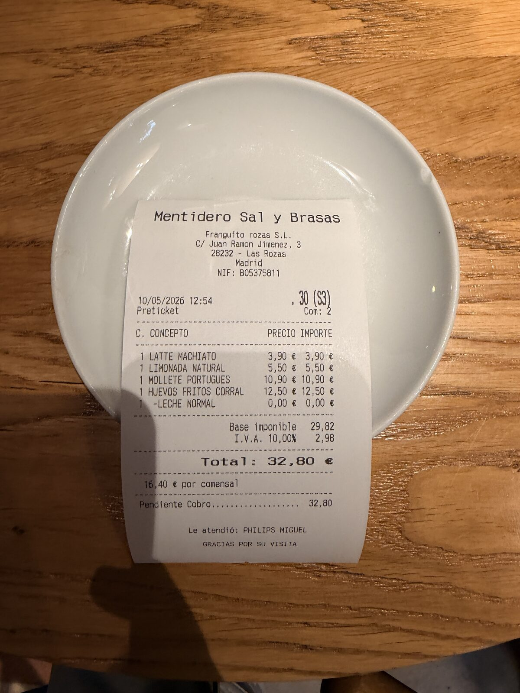
Outlet 的兩個幻滅 · 一個霸氣
Hoff · Bonpoint · Burberry · 小米的太陽眼鏡
幻滅 1 · 沒有 food court
確認了。Las Rozas Village 真的沒有美食街。剛剛已經吃完了。
幻滅 2 · Hoff 的特殊鞋墊沒那麼好
**Hoff** 是 2017 年從西班牙 Elche(艾爾切,鞋業重鎮)起家的 sneaker 品牌,主打**「以城市為靈感」**的設計,2022 年營收 3,900 萬歐元,這幾年最紅的西班牙潮鞋。昨天在馬德里市區的櫥窗看到很心動,小紅書都說特殊鞋墊很厲害 ——
今天進了 outlet 的 Hoff 旗艦店,鞋拿起來摸了一下,**特殊鞋墊變普通鞋**。**outlet 的真相 #1:你昨天心動的東西,進來摸到反而冷靜。**
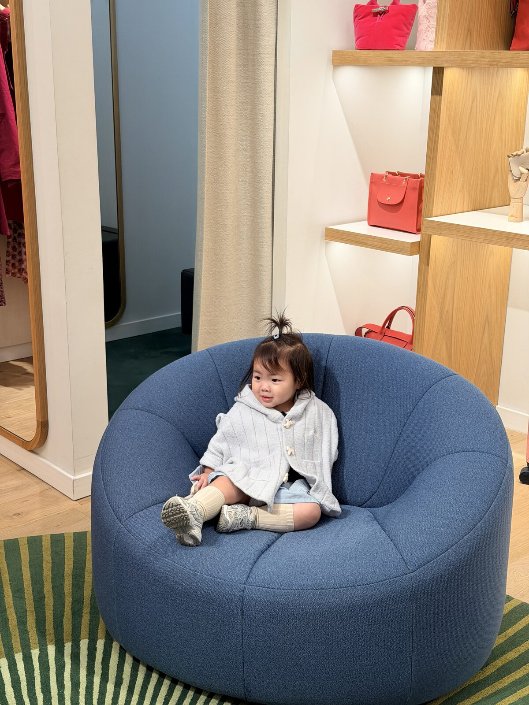
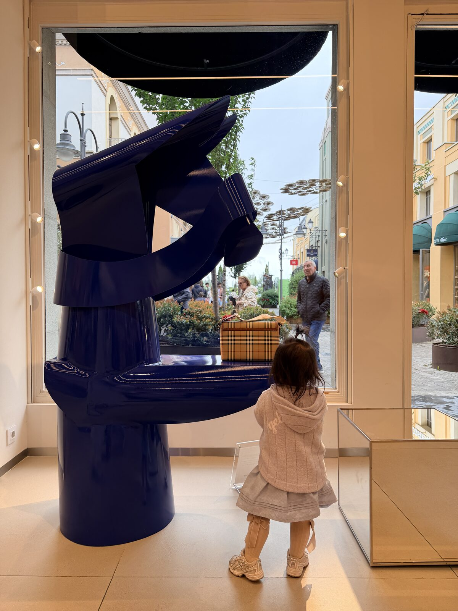
小米的太陽眼鏡霸氣坐姿
在某家店的試衣間旁邊,小米爬上了一張**棕色皮椅**,**自己戴上了一副大人的太陽眼鏡**,然後翹腳給鏡頭看自己的 New Balance 童鞋 —— 全程沒大人指導。三秒鐘就拍出了**「我才一歲十一個月,但我已經在歐洲打過卡」**的氣場。
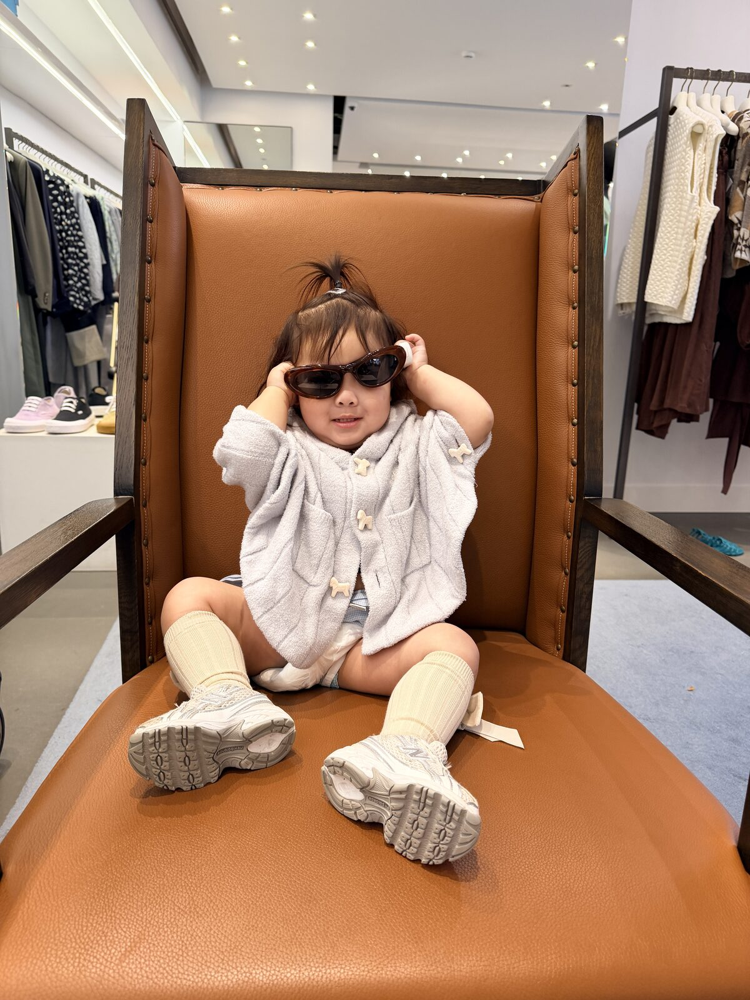
後來才發現 ——
那副太陽眼鏡是阿米自己帶來的。
小米只是趁媽媽試衣服的時候,
把它從包包裡偷出來戴上。
整張照片是一場 1 歲 11 個月的擺拍。
Madrid en Vena
達利火箭 · 巨型 Banderilla 雕塑藝術季
吃完飯出來,**雨停了,太陽出來了。** Las Rozas Village 的小鎮街道一下子變成藍天綠樹,我們才注意到 outlet 的大廣場上**散佈著好幾座超大型彩色雕塑**。
這是 outlet 為了 5 月 15 日 **San Isidro 馬德里守護神節**特別策劃的 2026 春季藝術季 ——**「Madrid en Vena(馬德里入血)」**:5 位藝術家、3 大母題(扇子、康乃馨、Banderilla),把馬德里最傳統的元素變成大型公共雕塑。
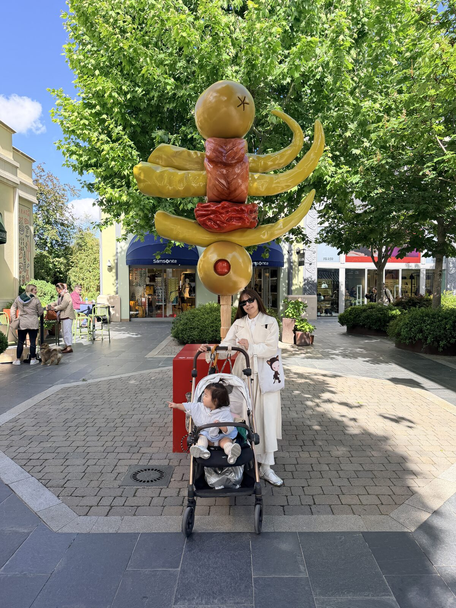
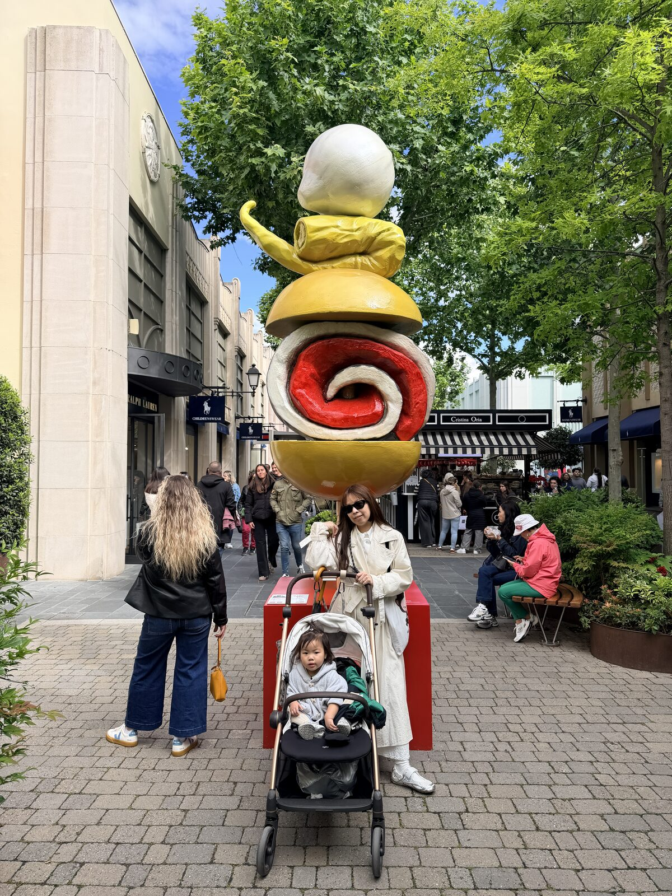
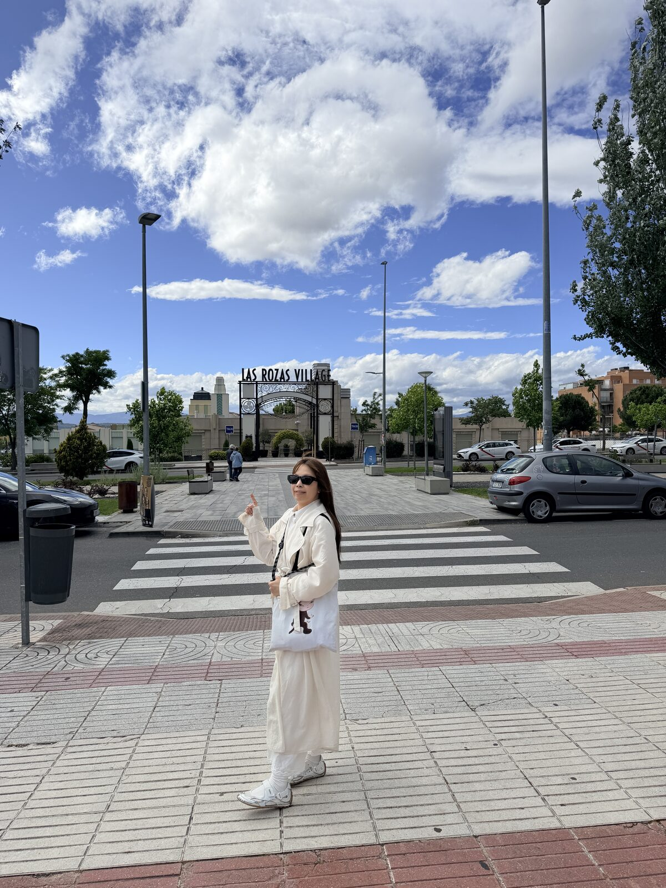
Banderilla 是什麼?
*Banderilla* 是西班牙國民下酒小菜 —— 用竹籤把**橄欖、辣椒、鯷魚、洋蔥、酸黃瓜**串起來。名字來自鬥牛場上鬥牛士插在牛背上的「**banderilla 短矛**」,因為造型像。Asgaya 集團那位 Esteban 在新聞訪問裡形容:**「這座叫 *Cohete Dalí*(達利火箭),因為串裡的 *piparra*(醃辣椒)讓人想到達利的鬍子。」**
從假西班牙小鎮的精品 outlet,
到守護神節暖身的下酒菜雕塑展 ——
Las Rozas Village 把「商業」跟「在地文化」串起來
串成一根巨大的下酒菜。
戰利品 · 兩年後的 Ralph Lauren
一家三口三條時間軸
逛完一輪,各自帶著自己的小包離開:
| 品牌 | 戰利品 | 誰 |
|---|---|---|
| Scalpers | 長袖 × 2 | 應急 · 擋一下預估錯的冷天氣 |
| Prada | 鞋一雙 | 用戶我 |
| Miu Miu | 小包 | 阿米 |
| Ralph Lauren | 童裝 | 小米 · 2 年後才能穿 |
**Scalpers** 是馬德里在地 streetwear 品牌,**骷髏頭 logo**,**長袖 outlet 不貴** —— 但這個購買動機超寫實:**5 月歐洲的氣溫不穩定,你以為帶夠了,結果還是冷。**
**時間的尺度,在這間 outlet 被攤開來看:**
阿米的 Miu Miu 小包 → 立刻能用
我的 Prada 鞋 → 旅程剩下幾天就會穿到
Scalpers 長袖 → 今晚就會冷到要穿
小米的 Ralph Lauren → 兩年後
**為兩年後的小米,預付了一份旅行記憶。**
等 2028 年 5 月小米穿上去那天,**今天 Las Rozas 的這趟,就會被重新拆封一次**。✨
客運站 · 唐吉訶德的地鐵牆
Parada 12447 · Plaza de España Andén 2
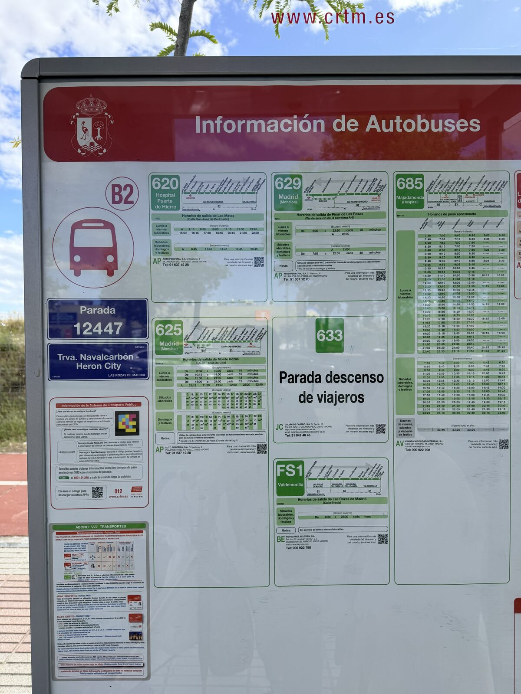
從 Parada 12447(**Trva. Navalcarbón – Heron City**)搭 **Avanza 625** 回 Moncloa,再轉 3 號線到 Plaza de España。客運上小米已經睡著了。
Bibliometro · 把唐吉訶德印在月台上
進地鐵站抬頭一看 —— **整面月台牆貼滿了《唐吉訶德》第十八章原文**。這是馬德里地鐵 **Bibliometro 文學牆計畫**,讓通勤族邊等車邊讀塞萬提斯。**Plaza de España 是這個計畫最有代表性的一站**,因為站名跟廣場上那座唐吉訶德雕像是同一個。
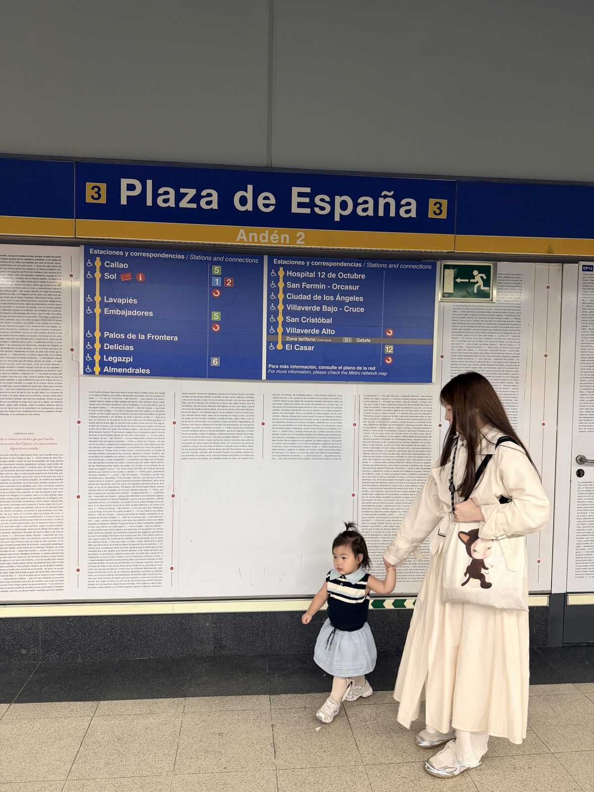
1605 年塞萬提斯寫《唐吉訶德》,
四百多年後馬德里把它**整章印在月台上**,
讓每天通勤的上班族,
**站到地鐵來之前先讀兩段** ——
一個城市對文學的尊重,
會印在它最日常的角落。
Templo de Debod
馬德里市中心的古埃及神廟 · 2,200 年
回飯店快速游了泳,換了乾衣服,**走路 5 分鐘到 Templo de Debod**。
這座神廟是**真的古埃及神廟,不是仿製品**。原本在尼羅河旁邊,2,200 年前的卑底斯(Adijalamani 王朝)建造,獻給女神 Isis。**1968 年埃及為了感謝西班牙幫忙搶救 Abu Simbel 神廟**(因 Aswan 水壩工程要被尼羅河水庫淹沒),把整座 Debod 神廟**石塊拆下來、海運到馬德里、1972 年在山丘上重組**。是埃及境外**唯二**的完整古埃及神廟之一(另一座在紐約大都會博物館)。
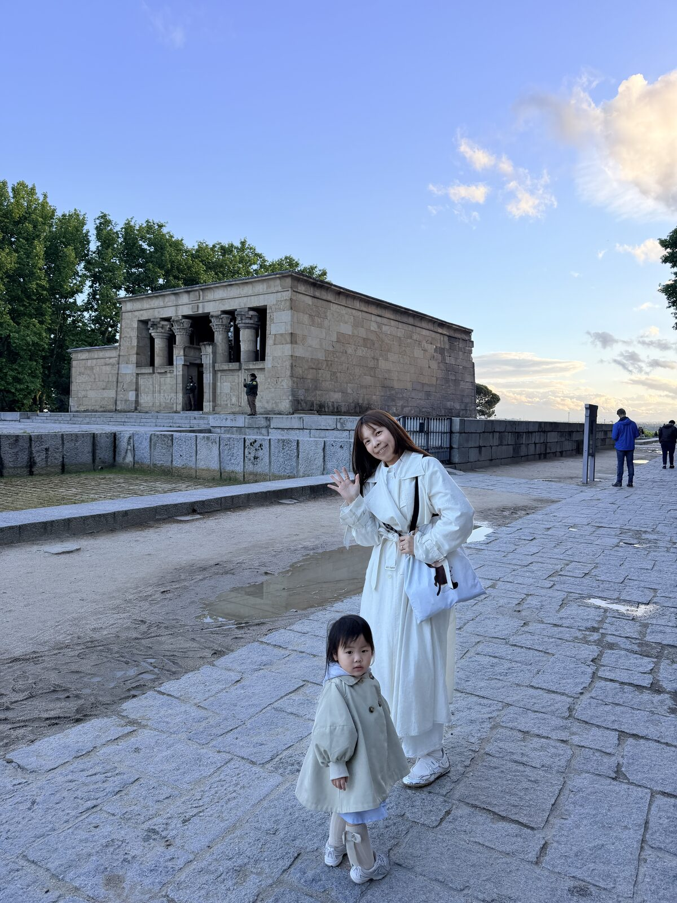
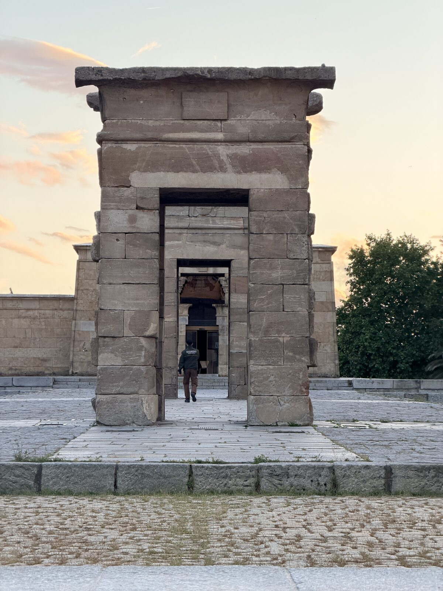
三道門 · 古埃及的進階儀式
神廟有**三道門**,代表進入越深越神聖 —— 從世俗 → 淨化 → 聖殿。**最內側是獻給女神 Isis 的浮雕**。免費入內,但黃昏關門前 30 分鐘就停止放人。這個保全當時剛好在巡視最後一輪。
站在這裡會有一種奇怪的時空感:
背後是 21 世紀的馬德里街景,
前面是 2,200 年前的埃及砂岩,
**保全穿著現代制服走進神廟,**
**夕陽把石頭染成蜜糖色。**
小米的歐洲學分 +2
追鴿子 · 摸狗
神廟周圍的廣場是**馬德里人遛狗、餵鴿、慢跑、看夕陽的聖地**。小米剛從推車上下來,就被解放出來 ——
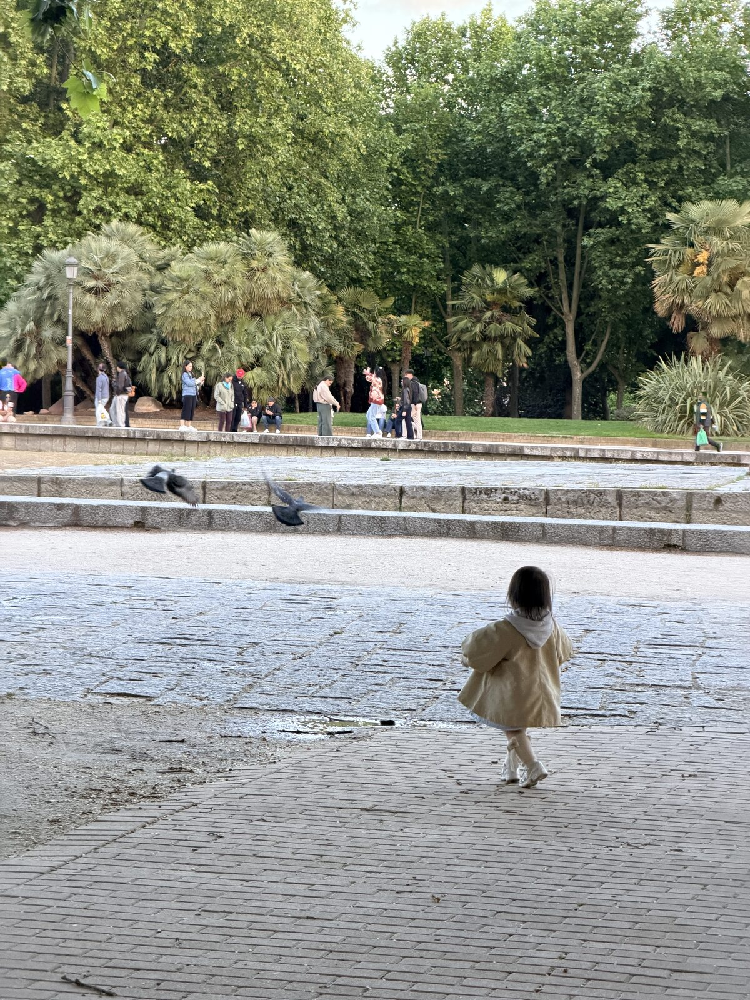
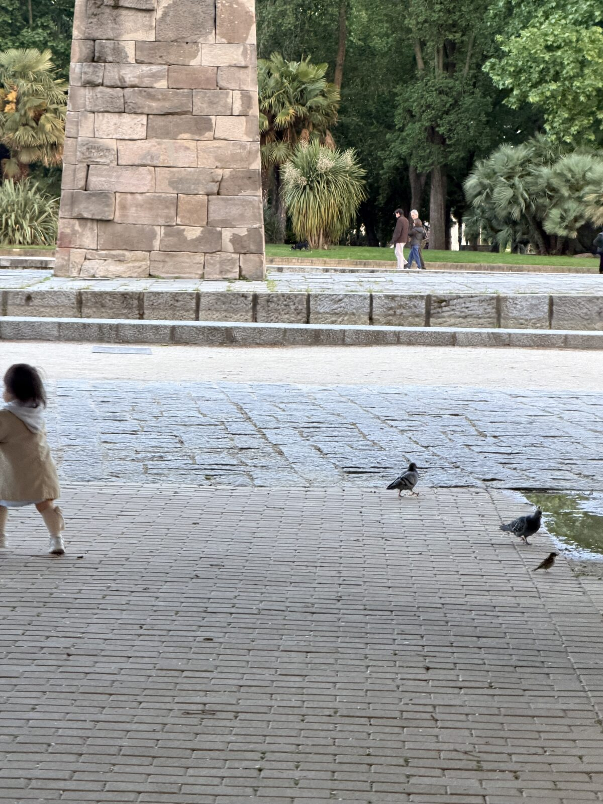
追完鴿子,旁邊一對遛狗的西班牙夫婦,**牽著一隻灰黑色貴賓 + 一隻白色比熊**。小米直接蹲下來抱住白色比熊的脖子 —— 沒有怕生、沒有警戒,**1 歲 11 個月的「我跟全世界的狗都是朋友」階段**。
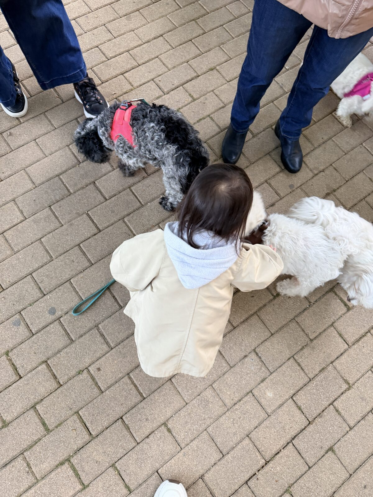
El Mejor Mirador de Madrid
馬德里最佳觀景點 · 雙王宮 · 金粉夕陽
從神廟往南走一小段就是 Debod **西側觀景平台** —— 馬德里人公認的**「El mejor mirador de Madrid」**(全馬德里最佳觀景點)。海拔 650 公尺的西郊森林 + 沒有高樓遮擋 + 雲層多變的 5 月天 = **黃昏聖地**。
一張照片裡的雙王冠
大部分人會往西看夕陽,但只要轉個身往南看 —— **馬德里王宮 + 阿穆德納主教座堂同框**。王宮 2,800 個房間是全歐洲最大,大教堂蓋了 114 年(1879-1993),2004 年 Felipe 王儲跟 Letizia 王妃在這裡結婚。
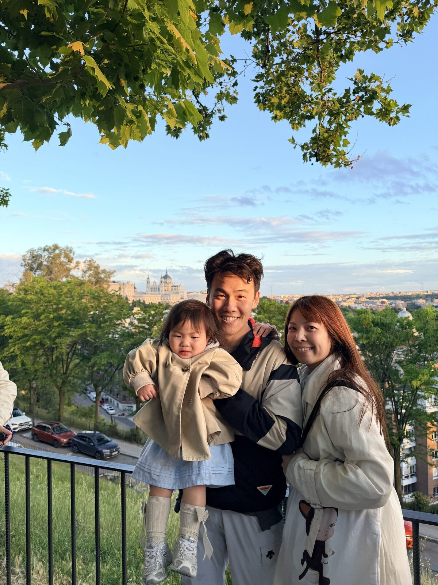
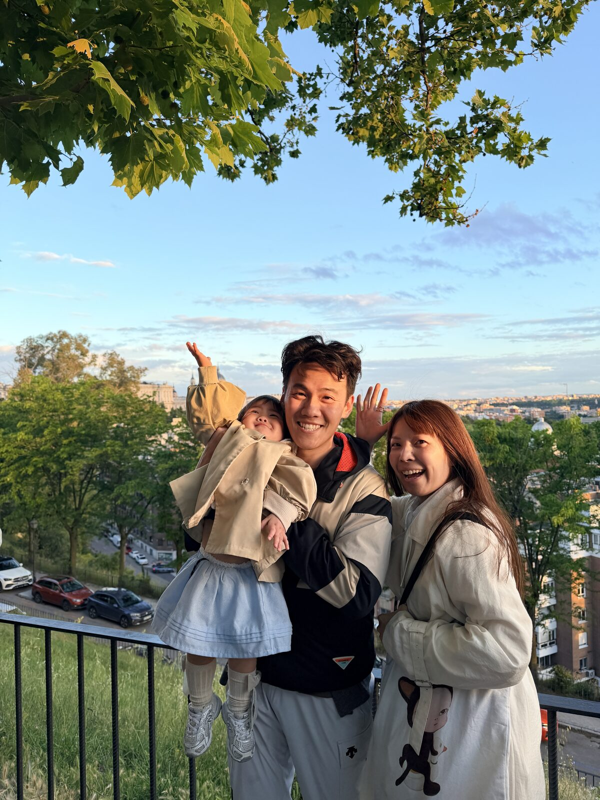
馬德里的金粉夕陽
天空被劈成兩半:**左邊淡藍灰紫,右邊金黃蜜桃**,中間一抹萊姆綠。雲層上層是被風吹散的羽毛狀卷雲,下層是蓬鬆 cotton candy 雲 —— **兩層雲在不同高度被不同角度的夕陽染色**。鑄鐵欄杆 + 街燈剪影自然形成前景畫框。
三天的雨追在我們後面,
結果在這個傍晚,
馬德里決定把所有的好天氣一次給我們。
1,200 年的馬德里 · 壓進一張照片
從地鐵口 → 阿拉伯城牆 → 18 世紀大圓頂
離開觀景台往地鐵方向走,**回頭一張隨手拍** —— 結果發現整個馬德里的歷史軸線都被壓進這張照片:
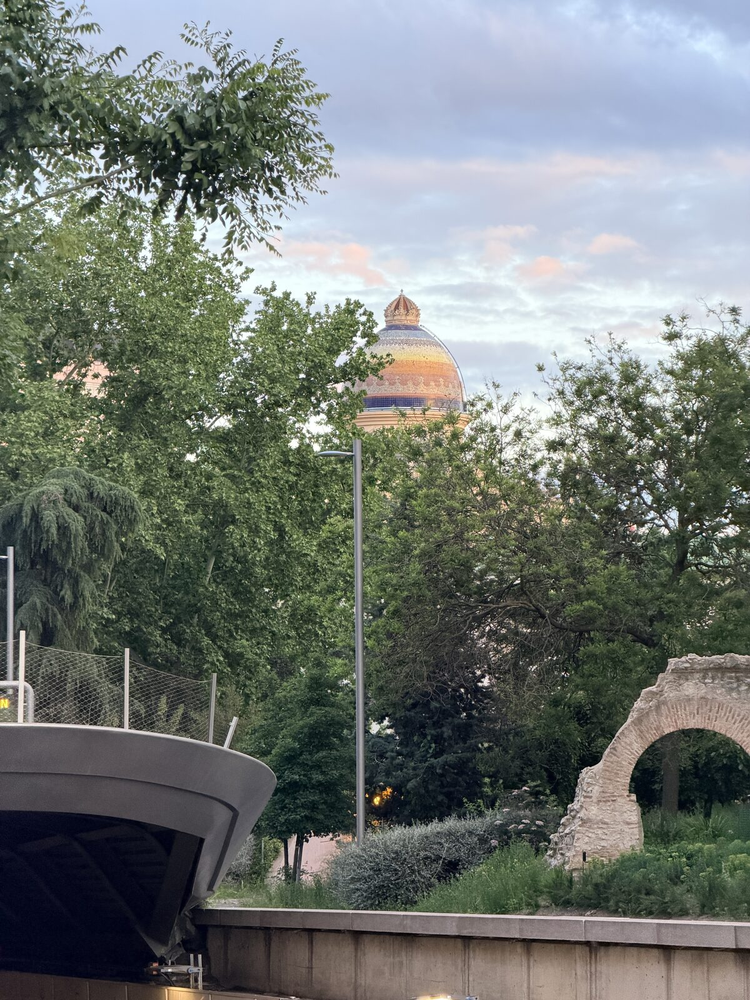
| 畫面位置 | 建築 | 年代 |
|---|---|---|
| 左下 | Plaza de España 地鐵站出口 | 21 世紀 |
| 右下 | Murallas Árabes(摩爾人阿拉伯城牆) | 9 世紀 · 860 年 |
| 遠方 | Real Basílica de San Francisco el Grande | 18 世紀 · 1761 完工 |
| 天空 | 馬德里 5 月的雲 | 2026/05/10 黃昏 |
馬德里的彩釉大圓頂
遠方那座**斑斕的圓頂** = **聖方濟各大教堂(Real Basílica de San Francisco el Grande)**,**直徑 33 米的圓頂是西班牙第三大、世界第四大**(僅次於羅馬聖伯多祿、佛羅倫斯主教座堂、米蘭主教座堂)。**圓頂的彩色釉瓷馬賽克 + 頂端金色皇冠**在夕陽下會發光。
Murallas Árabes · 馬德里的真正起點
右下那座小拱門是**摩爾人 9 世紀蓋的阿拉伯城牆**。**馬德里這座城市原本就是阿拉伯人建立的**,名字 *Mayrit* 在阿拉伯語裡意思是「水道」,後來才被基督教徒收復。**這段拱門是馬德里現存最古老的人造遺跡。**
一張隨手拍,
**包含了馬德里 1,200 年。**
Asgaya Cervecería
Abundancia · 豐盛的代價
從觀景台往北走兩個路口,就到 **Calle Ferraz 8** —— **Asgaya Cervecería**。「**Asgaya**」在阿斯圖里亞斯語(*Asturiano*,西班牙北部地區語言)裡意思是**「豐盛 / 滿溢」**。這家店是 Grupo Asgaya 旗下,**2018 年得過「馬德里最佳 Cachopo + 全西班牙第三名」**。
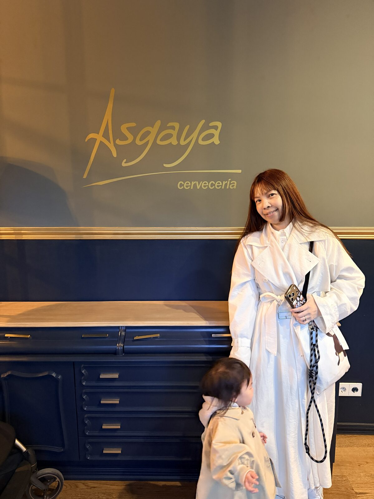
蕁麻疹友善版 Gin Tonic
桌上點了一杯**沒有酒精的 Gin Tonic** —— 服務生用的是 **Tanqueray 0.0% Sin Alcohol**(無酒精版本)+ tonic + 自家檸檬汁。**蕁麻疹進入第三天,真的酒不能喝,但西班牙廚房幫我們調了一杯假酒。**
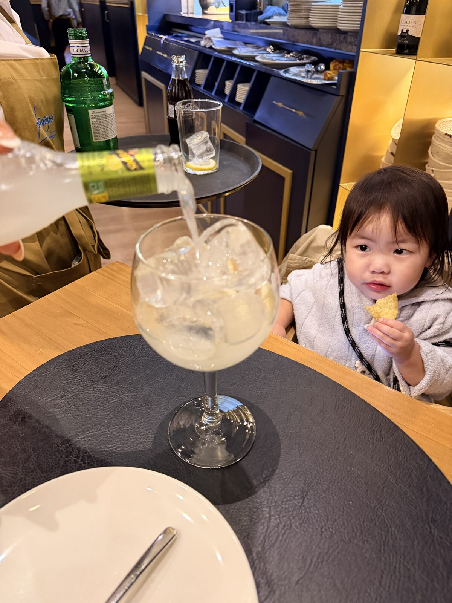
三道菜 + 一份甜點(店家送)
阿米點了**鮭魚塔塔(Tartar de Salmón)**, 我點了**牛菲力切片(Tacos de Solomillo)**配 padrón 青椒,小米的份是**全西班牙第三名的 Cachopito**。
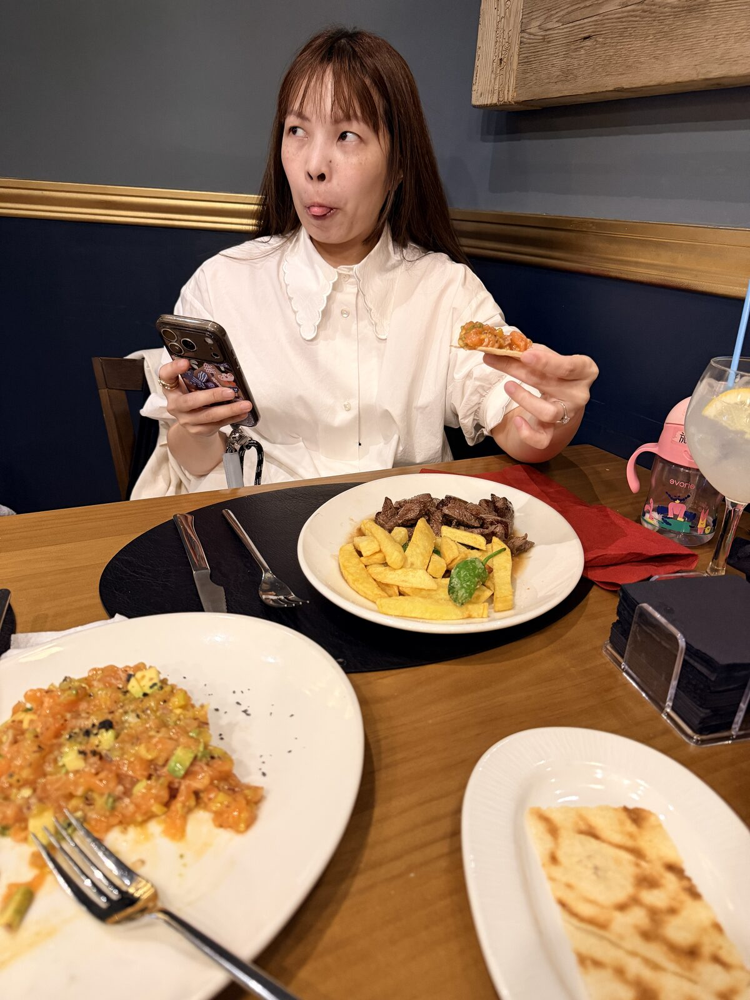
Cachopito · 全西班牙第三名的炸牛排起司三明治
**Cachopo** 是**阿斯圖里亞斯(北西班牙)國民菜** —— **兩片牛排中間夾伊比利火腿 + 起司**,裹麵包粉炸。一般 cachopo 是巨無霸(平均 800g-1kg),這家叫 *Cachopito*(小版本)—— **「小」是相對的,還是巨無霸。**
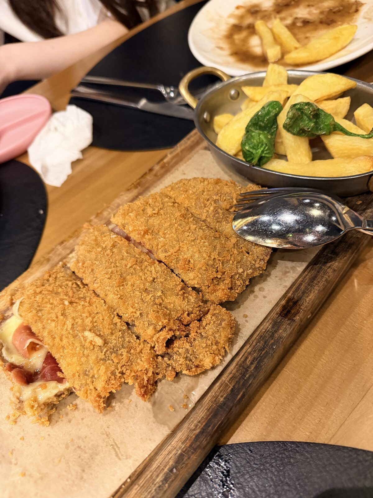
**Day 7 的終極矛盾:**
我們點了全西班牙第三名的炸牛排起司三明治,
然後把裡面的火腿挑掉了。
(蕁麻疹進入第三天,jamón 還是不行。)
店家加碼 · Bizcocho con Dulce de Leche
結帳時店家送了一份**焦糖蛋糕(Bizcocho con Dulce de Leche)** —— 蜂蜜色海綿蛋糕,三塊小方塊,上面淋阿根廷風 **dulce de leche**(牛奶 + 糖煮 3 小時的焦糖醬)。**小米換了一件深藍白條紋無袖 polo 衫,滿臉狐疑看著:這個我可以吃嗎?**
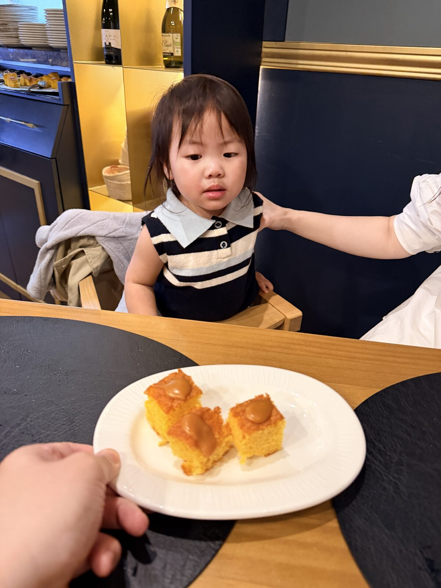
| 品項 | 備註 | 價格 |
|---|---|---|
| 2× Servicio de Pan | 麵包費 | 2,00 € |
| Tartar de Salmón | 鮭魚塔塔(份量極大) | 15,00 € |
| Tacos de Solomillo | 牛菲力切片配 padrón | 19,00 € |
| Cachopito ⭐ | 全西班牙第三名炸牛排 | 20,00 € |
| Zumo Piña | 鳳梨汁 | 3,50 € |
| Coca Cola | — | 3,50 € |
| Total | 2 comensales · IVA 10% | 63,00 € |
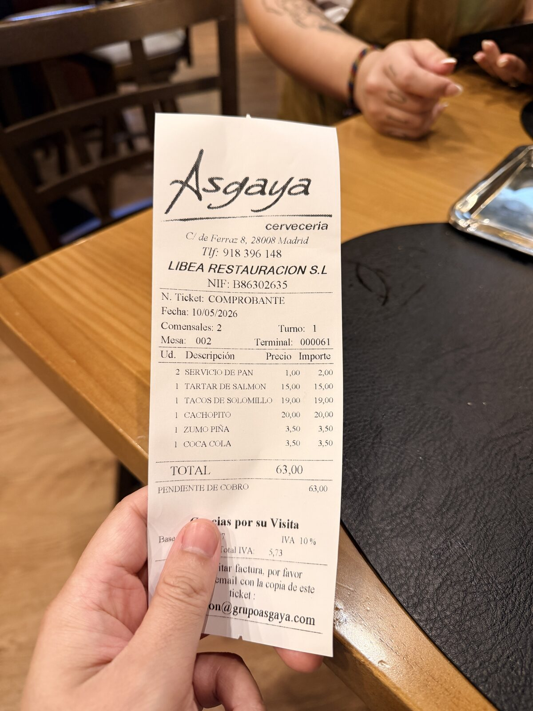
夜歸的小米 · 啃著麵包
馬德里第三夜 · 一塊麵包當睡前儀式
從 Asgaya 走出來,夜風吹著,街燈散出星芒。對面就是剛剛走出來的店,紅色雨遮還在發光。**小米拿著 Asgaya 桌上沒吃完的一塊麵包,坐在推車裡繼續啃。**
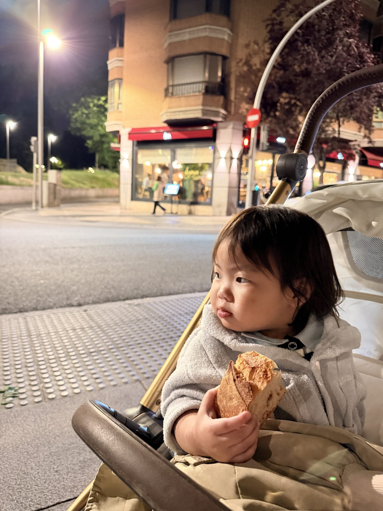
Day 7 結束的方式 ——
不是夕陽,
不是 2,200 年的神廟,
不是 63 € 的晚餐 ——
是小米抱著一塊免費的麵包,
在馬德里的街角繼續啃。
Day 7 · 路線總覽
從假村莊到真神廟
- 🚌 Avanza 625 · Moncloa → Las Rozas Village · 4,20 € 現金
- 🛍️ Las Rozas Village · 西班牙第一家精品 outlet · 1996 開幕
- 🍳 Mentidero Sal y Brasas · 葡式雞肉三明治 + 放山雞炸蛋 · 32,80 €
- 🎨 Madrid en Vena · San Isidro 守護神節雕塑藝術季
- 👗 戰利品 · Scalpers / Prada / Miu Miu / Ralph Lauren(2 年後)
- 🚇 Plaza de España · Bibliometro 唐吉訶德牆
- 🏊 飯店泳池快閃 · Riu Plaza España
- 🏛️ Templo de Debod · 2,200 年古埃及神廟 · 馬德里市中心
- 🐦 小米的歐洲學分 · 追鴿子 + 摸西班牙人的狗
- 🌅 El Mejor Mirador de Madrid · 全馬德里最佳觀景點 · 雙王宮夕陽
- 🏰 1,200 年壓在一張照片裡 · 阿拉伯城牆 + 彩釉大圓頂
- 🍻 Asgaya Cervecería · 全西班牙第三名 Cachopito + Sin Alcohol Gin · 63,00 €
- 🥖 小米的夜歸儀式 · 推車裡啃麵包回飯店